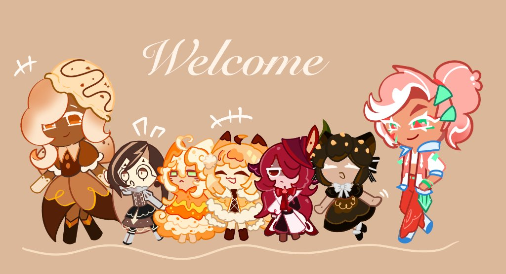

A LITTLE WORLD OF MY OWN
你好，我是徐嬋諭，也可以叫我霞冬。
在暗夜之中，
尋找自己的光。
把日常的靈感，慢慢畫成自己的世界。
這裡收藏著我喜歡的角色、故事，
以及每一個正在成形的創作。
繪畫 / 角色 / 故事
FROM MY SKETCHBOOKNO. 02

A WARM LITTLE WELCOME讓每個角色，都有自己的光。
↗ 一點想像，一點溫度。
SELECTED WORKS / 03
收藏的創作片刻
KEEP EXPLORING
每一頁，
都是我的一小部分。
從喜歡的事物開始，
一步一步，找到創作的方向。